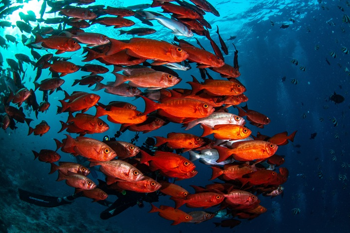
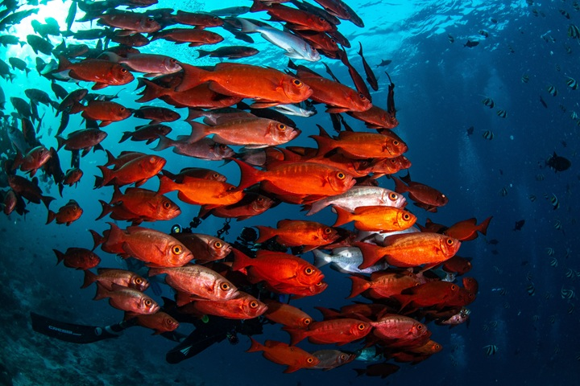

Immagini presenti nel progetto

 

Osserva: le tre immagini si dispongono una di fianco all'altra, perché sono di tipo inline
Immagini esterne al progetto

Anche le immagini possono essere cliccabili